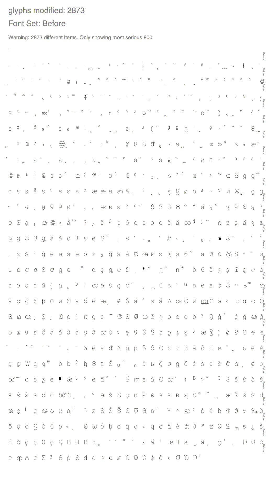
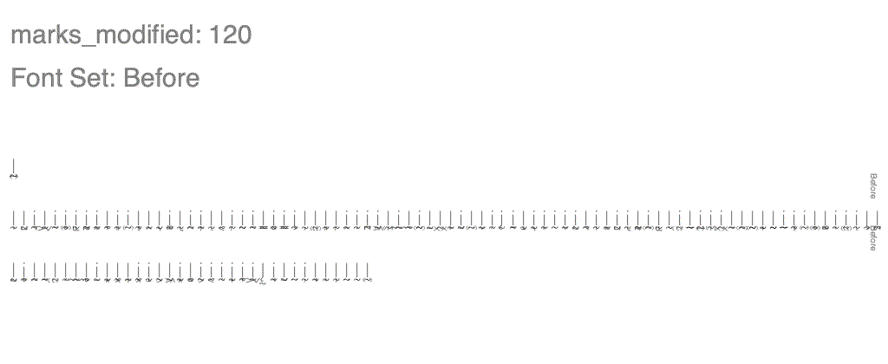
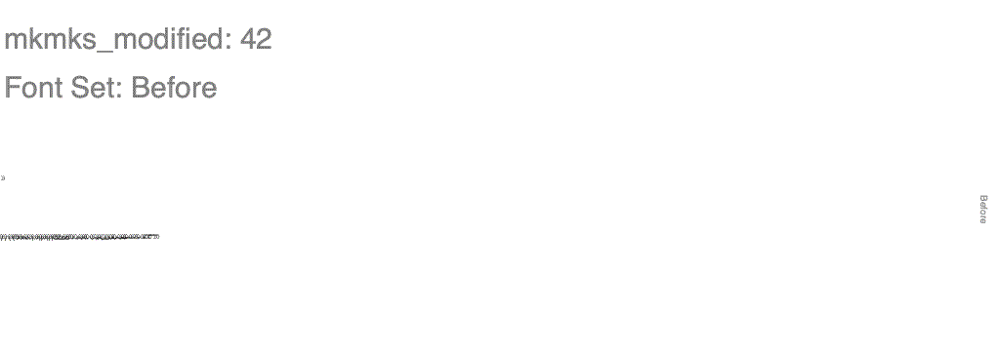

Diffenator
Displaying the 20 most significant items in each table. To increase use the '-ol' flag
names new: 2
| id | string |
|---|
| (294, 3, 1, 1033) | Condensed |
| (295, 3, 1, 1033) | Normal |
names missing: 2
| id | string |
|---|
| (16, 3, 1, 1033) | Roboto |
| (17, 3, 1, 1033) | Thin |
names modified: 5
| id | string_a | string_b |
|---|
| (1, 3, 1, 1033) | Roboto Thin | Roboto |
| (3, 3, 1, 1033) | Google:Roboto Thin:2017 | Google:Roboto:2020 |
| (4, 3, 1, 1033) | Roboto Thin | Roboto |
| (5, 3, 1, 1033) | Version 2.138; 2017 | Version 3.0; 2020 |
| (6, 3, 1, 1033) | Roboto-Thin | Roboto-Regular |
attribs modified: 6
| table | attrib | value_a | value_b |
|---|
| OS/2 | panose | 0-0-0-0-0-0-0-0-0-0 | 2-0-0-0-0-0-0-0-0-0 |
| OS/2 | usWeightClass | 250 | 100 |
| head | xMax | 4187 | 4188 |
| head | xMin | -1654 | -1825 |
| head | modified | 2017/05/26 10:22:07 | 2020/05/28 19:59:00 |
| head | fontRevision | 2.13800048828125 | 3.0 |
glyphs modified: 2873
| glyph | diff | string |
|---|
| anoteleia | 1.0 | · |
| periodcentered | 1.0 | · |
| uni2027 | 1.0 | ‧ |
| uni032B | 0.8571 | ̫ |
| uniA71F | 0.8462 | ꜟ |
| uni0358 | 0.8333 | ͘ |
| uni0307 | 0.8333 | ̇ |
| dotaccent | 0.8333 | ˙ |
| period | 0.8333 | . |
| onedotenleader | 0.8333 | ․ |
| uni2E33 | 0.8333 | ⸳ |
| uni1AB5 | 0.7941 | ᪵ |
| uni033C | 0.7857 | ̼ |
| uniA71E | 0.7692 | ꜞ |
| uni2E31 | 0.6667 | ⸱ |
| uni0342 | 0.6667 | ͂ |
| uni0357 | 0.6667 | ͗ |
| uni2E3E | 0.6556 | ⸾ |
| tilde | 0.625 | ˜ |
| uni1DC2 | 0.625 | ᷂ |

marks_modified: 120
| base_glyph | mark_glyph | diff_x | diff_y |
|---|
| uni1E2C | uni034D | 1.0 | -363.0 |
| uni1E2C | uni0339 | 1.0 | -363.0 |
| uni1E2C | uni033A | 1.0 | -363.0 |
| uni1E2D | uni0349 | 1.0 | -363.0 |
| uni1E2C | uni1DFF | 1.0 | -363.0 |
| uni1E2D | uni0331 | 1.0 | -363.0 |
| uni1E2D | glyph02193 | 1.0 | -363.0 |
| uni1E2D | uni1AB8 | 1.0 | -363.0 |
| uni1E2D | uni1DFD | 1.0 | -363.0 |
| uni1E2D | uni0347 | 1.0 | -363.0 |
| uni1E2C | uni031E | 1.0 | -363.0 |
| uni1E2D | uni0348 | 1.0 | -363.0 |
| uni1E2D | glyph02191 | 1.0 | -363.0 |
| uni1E2C | uni1DC2 | 1.0 | -363.0 |
| uni1E2C | uni032D | 1.0 | -363.0 |
| uni1E2C | uni1DCF | 1.0 | -363.0 |
| uni1E2D | uni035A | 1.0 | -363.0 |
| uni1E2C | uni1AB7 | 1.0 | -363.0 |
| uni1E2D | uni032F | 1.0 | -363.0 |
| uni1E2D | uni034E | 1.0 | -363.0 |

mkmks_modified: 42
| base_glyph | mark_glyph | diff_x | diff_y |
|---|
| uni1ABC | uni0312 | -45.0 | 331.0 |
| uni1ABB | uni0312 | -45.0 | 331.0 |
| uni1ABB | uni0313 | -13.0 | 331.0 |
| uni1ABC | uni0313 | -13.0 | 331.0 |
| uni1ABC | uni0314 | 11.0 | 331.0 |
| uni1ABB | uni0314 | 11.0 | 331.0 |
| uni1ABB | hookabovecomb | -75.0 | 245.0 |
| uni1ABC | hookabovecomb | -75.0 | 245.0 |
| uni1ABC | uni030F | 127.0 | 158.0 |
| uni1ABB | uni030F | 127.0 | 158.0 |
| uni1ABB | uni030D | 0.0 | 280.0 |
| uni1ABB | uni030B | -63.0 | 217.0 |
| uni1ABB | uni030E | 0.0 | 280.0 |
| uni1ABC | uni030B | -63.0 | 217.0 |
| uni1ABC | uni030E | 0.0 | 280.0 |
| uni1ABC | uni030D | 0.0 | 280.0 |
| uni1ABB | uni0310 | 1.0 | 274.0 |
| uni1ABC | uni0310 | 1.0 | 274.0 |
| uni1ABC | uni030A | -1.0 | 233.0 |
| uni1ABB | uni030A | -1.0 | 233.0 |
